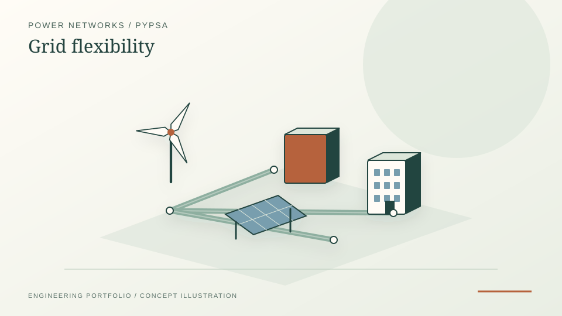

How do corridor limits and flexibility change dispatch? A Netherlands-inspired screening model with hand-checkable congestion and storage tests. Synthetic topology; not a validated Dutch grid.
Portfolio project · Python · PyPSA · BESS · Streamlit
Exploratory PyPSA-NL Grid Congestion and BESS Learning Project
A Netherlands-inspired exploratory modelling workflow for learning PyPSA concepts around renewable growth, grid bottlenecks, storage siting and flexible connection strategies. This sits as supporting evidence below the main energy-systems projects, not as a headline track. It demonstrates how to assemble and check constrained-network scenarios, while making the synthetic topology and proxy metrics explicit rather than implying operator calibration.
PyPSALinopyHiGHSStreamlitPython

PROJECT REFERENCE / PYPSA-NL-GRID-FLEXIBILITYEngineering contribution
- Built a simplified regional PyPSA grid model with provincial buses, inter-regional corridors, renewable generation, backup generation and storage/flexibility options.
- Developed scenario workflows for base constrained grid, high solar, high offshore wind, BESS placement, flexible connection contracts, targeted reinforcement and combined BESS/flexibility cases.
- Implemented a BESS siting and sizing sweep across regions, MW ratings and durations, ranking options using renewable dispatch gain, backup reduction, congestion-cost proxy relief and line-overload reduction.
- Added flexible connection logic to represent lower available connection capacity during congested hours and normal access during uncongested hours.
- Built a Streamlit dashboard with scenario comparison, hourly flows, bottleneck/N-1 screening, BESS results, validation checks and report exports.
- Documented the model transparently as a simplified Netherlands-inspired screening model, not a validated Dutch TSO operational grid model.
Current implementation and provenance
What the public repository actually models
- Network: a Netherlands-inspired synthetic network of provincial buses and assumed inter-regional corridor ratings. It is not a clone of a Dutch TSO operational grid.
- Input scaling: documented public Dutch demand and renewable-capacity statistics guide selected totals; spatial topology, corridor ratings and hourly profile shapes remain modelling assumptions.
- Scenarios: solves renewable-growth, congestion, BESS siting and sizing, flexible-connection and reinforcement scenarios using PyPSA/HiGHS.
- Outputs: exports dispatch, curtailment, bottleneck diagnostics, N-1 screening proxies, CSV reports, a Streamlit dashboard and consistency checks.
Evidence boundary: Historical exploratory work with reference models should not be conflated with the outputs in the current public repository. The results shown here refer to its simplified synthetic provincial grid, not to a calibrated Dutch transmission-network model.
What the project demonstrates
Transparent screening, not an operational forecast
- How assumed transfer bottlenecks and renewable profiles influence constrained dispatch and storage value.
- How BESS options can be screened across candidate locations, MW ratings and energy durations.
- How scientific invariants, solver status and accounting checks can catch implementation mistakes without establishing real-world accuracy.
Limitations
Explicitly synthetic network
- Topology, line ratings and hourly profiles are not operator-calibrated representations of the Dutch transmission grid.
- The N-1 screening proxy ranks potential concerns from solved flows; it is not a full N-1 security analysis.
- The congestion-cost proxy and battery ranking are screening metrics, not forecasts of bankable project revenue.
- There is no calibrated comparison to TenneT real-time network conditions or multi-year investment assessment.
Relevance
Why this matters
This project is retained as transparent exploratory evidence: it helped develop working familiarity with PyPSA-style grid modelling, BESS screening, congestion interpretation and dashboard communication. The stronger grid evidence in the portfolio remains the distribution-grid coursework and the stronger energy-systems evidence remains IDA ICE, HOMER Pro, LEAP, dispatch optimisation and forecasting.